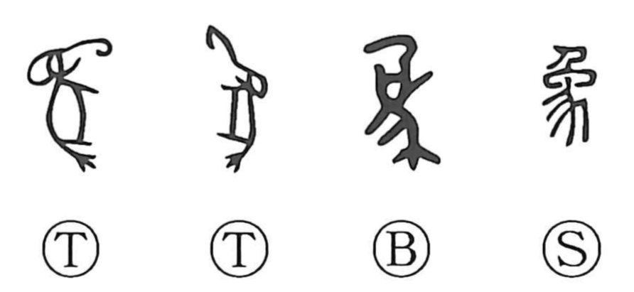

象

Kun: katadoru | On: shou, zou
elephant ・ image ・ form ・ appearance ・ phenomenon
Explanation
This character began as a pictograph of an elephant, its trunk and bulky body clearly drawn in oracle-bone inscriptions. Divination texts even ask, “Will an elephant be caught?” and others record “building a palace,” suggesting that in the Yin period elephants were captured and put to work on construction. In early script, 為 (爲) depicts a hand added to the elephant’s trunk, expressing the idea of employing or using the animal. Elephants still roamed as far north as the north bank of the Yangtze in the fifth to sixth centuries BCE. From the concrete beast, the sense broadened to abstract meanings such as “image, form” and “appearance, condition,” and the graph is at times used where later texts write 像 and 様.